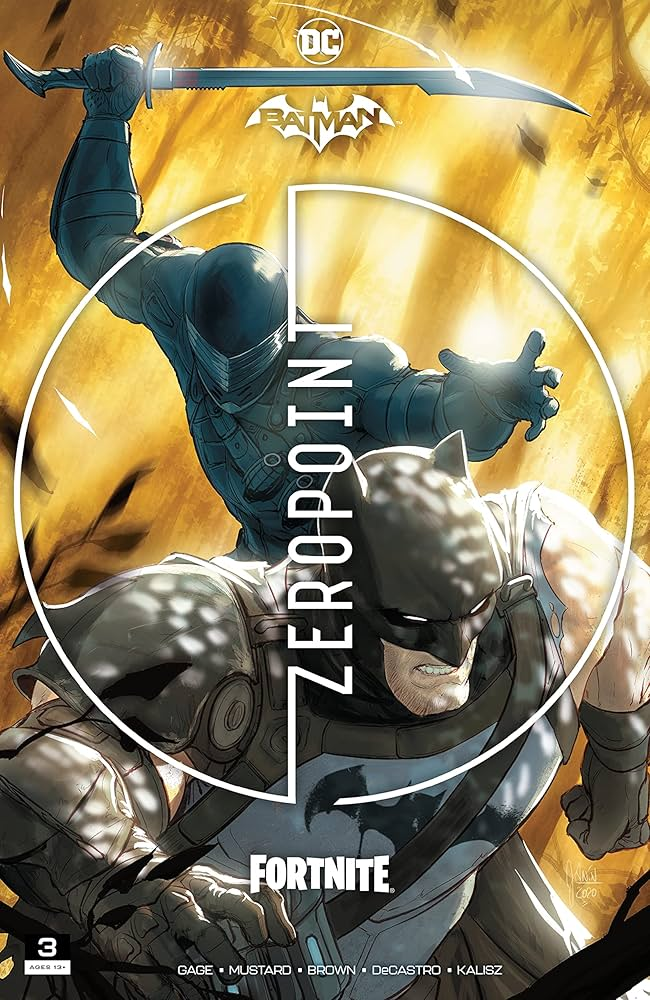

O que é Crossover?
Crossover é quando dois personagens fazem parceria, começando nas hqs com personagens de hqs diferentes aparecendo
em hqs diferentes, como Superman aparecendo na do Batman.
Ao longo do tempo esses Crossover passaram a ser com outras empresas, que são as que chamam mais atenção e as que falaler nesse artigo.
Fortnite X Batman e Marvel
Em 2021 a DC em parceria com a Epic Games lançou Batman/Fortnite: Ponto Zero, que conta a história do Batman e outros personagens
de seu universo indo para na ilha do Fortnite, se passando durante a temporada 5 do capítulo 2 , ele precisa
encontrar alguma forma de escapar dela , que reseta sua memória de tempos e tempos, enquanto
se alia a velhos aliados e moradores da ilha e enfrenta
antigos inimigos, além de adversários da ilha, como o Snake Eyes da franquia G.I Joe. Tendo 6 edições, com cada um contendo um
código de item de graça para ser resgatado no Fortnite.

Capas do Batman/Fortnite: Ponto Zero, com a segunda capa (da 3ª edição)
tendo da luta do Batman X Snake Eyes
No fim de 2021 a DC lançou uma continuação Batman/Fortnite: Ponto Zero, nomeado Batman/Fortnite: Fundação, tendo apenas uma edição.
Estrelando o homem morcego e O Fundação, skin do Fortnite que foi uma das mais importantes em questão de lore além de ter
a face do The Rock, com o Batman que Ri a antagonisando.
EM 2022 o Fortnite fez mais uma parceria de hq, só que dessa vez com a Marvel, nomeado de Guerra do Ponto Zero,
com os evento se passando durante a temporada 2 do capítulo 3 do Fortnite ela conta a história da aliança dos heróis
da Marvel, como o Wolverine, Homem Aranha e os Vingadores, com Os Sete, grupo liderado pelo Fundação, o mesmo da história
anterior. Com a Ordem Imáginária, do universo do Fortnite, a antagonizando junto com diversos vilões da Marvel, como
o Doutor Destino.
Batman/Spawn: Coleção Clássica
Essa coleção junta as duas hqs do Batman com o Spwan, personagem da Image Comics, com a primeira sendo lançada em
1994 e conta a história do encontro dos dois heróis e foi prodizido pelo Todd McFarlane, criador do Spawn, e o
Frank Miller, criador do Batman: Cavaleiro das Trevas, considerada uma das melhores das hqs. Se pasando no universo
do próprio Cavaleiro das Trevas, ela conta a história de um confronto entre os dois heróis, que acaba ocorrendo por
causa do Spawn confundir o morcego com um de seus vilões, com depois eles se aliando para combater a vilã Magaret
Love, do universo do Cavaleiro das Trevas, com essa história sendo considerada um complemento a história de The Dark Knight Returns.
A outra, nomeadda de Spwan/Batman guerra infernal, se passa em universo mais similar com o original da DC, conta a história
do encontro dos heróis e sua aliança para investigar o vilão Simon Vésper, que foi criado para essa parceria.
Capas de cada uma das edições
Injustice Vs He-man
Em 2019 foi publicado a hq de Crossover Injustice Vs Mestres do Universo, continua a história de Injustice, que mostra um universo
do qual após a Lois Lane morrer pelo Coringa o Superman acaba o matando e adquirindo um novo ponto de vista, que consiste
em começar a matar os vilões, tendo dois jogos feitos pela NetherRealm, que faz os jogos do Mortal Kombat também. Com a hq continuando
o final do Superman no Injustice 2, do qual ele adquire a tecnologia do Brianiac, um dos principais vilões da DC, assim conseguindo
controlar o mundo e aqueles que fossem contra ele. Para consiguir combate-lo os heróis restantes do universo do Injustice,
como o Arqueiro Verde e o Batman, decidem pedir ajuda de heróis de outro mundo, assim pedindo ajuda ao Principe Adam, o
He-man, e seus companheiros. Esqueleto, vendo a interação dos universos vê uma chance de finalmente derrotar seu
arquinimigo, He-man.
Bonus: Capas alternativa Noite das Trevas: Death Metal
Uma coisa comum é que as hqs possuem capas alternativas, durante a saga Noite das Trevas: Death Metal a DC decidiu
criar capas alternativas com bandas de metal do mundo real, como Ozzy Osborn, Sepultura, Megadeth, etc.
Capas feitas em parceria com as bandas: Dream Theater, Megadeth e Ozzy Osborn (respectivamente)
Bonus: Deadpool x Batman
Ao longo do tempo tiveram diversas parceria entre a Marvel e a DC, sendo a primeira nos anos 70. Mas desde 2006 não
é lançado uma nova hq dessa parceria. Sendo que recentimente foi anunciado uma nova hq de crossover entre as editoras,
sendo um crossover entre Deadpool, o mercernário tagarela, e Batman, o Cavaleiro das Trevas, com o crossover lançando
no fim de 2025
Então estás são alguns dos crossovers que ocorreram nas hqs, então qual foi seu favorito?